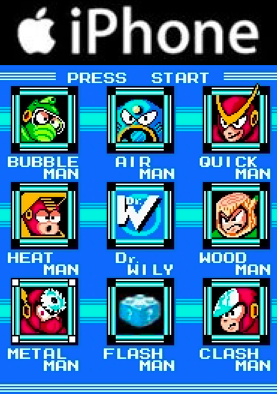

FlashのHTML5化
2011/04/07
Converting Flash to HTML5
自己紹介
- 大須賀 洋
- KLab株式会社 第２開発部
- PC版アプリとかスマートフォン関連
- 好きなエディターはvim
- グリモン、Chrome Extension大好き
深く反省してください
プラットフォームの
スマートフォン対応
迫られるアプリの対応
課題
無理
無能

Flash
目次
- 概要
- Flashとの違い
- 基本方針
- 実装
- レイヤー
- アニメーション
- Appendix
概要
Flashとの比較(1/2)
- 複雑なアニメが難しい
- 任意の曲線に沿って移動・回転できない
- 無理すればできない事はない
- シンプルなアニメの組み合わせに落としこむ
- ベクターグラフィックが無い
- 素材を作る時に大きさの決めが必要
- Canvasとかで無理すれば・・・
Flashとの比較(2/2)
- オーサリングツールが無い
- レイアウト調整のコストが高い
- コードとブラウザを行き来して調整
→ CSSの習熟必須
- ブラウザ・バージョン依存
- 割と多い
- OSが古いと動かない
- アニメーションが同じにならない
- なんかバグってる
基本方針
- HTML+CSS+Javascript
- CSS
- 素材のレイアウト
- パーツ毎のアニメーション
- JavaScript
- ロジック(ゲーム、UIアクション）
- アニメーションの連携
実装
レイヤー
- Flashのレイヤー機能の再現
- HTMLは基本自動レイアウト
- divの入れ子
- position:absolute;
レイヤー:サンプル(1/3)
<style type="text/css">
#stage { position:relative; }
#stage > * { position:absolute; }
#stage {
width:420px;
height:420px;
}
#bg { width:100%; height:100%; background-color:#d9d; }
#moge { width:40px; height:40px; background-color:#0d0; }
#hoge { bottom:50px; right:50px; font-size:40px;}
</style>
<div id="stage">
<div id="bg"></div>
<div id="moge"></div>
<div id="hoge">テキスト。</div>
</div>
#stage { position:relative; }
#stage > * { position:absolute; }
#stage {
width:420px;
height:420px;
}
#bg { width:100%; height:100%; background-color:#d9d; }
#moge { width:40px; height:40px; background-color:#0d0; }
#hoge { bottom:50px; right:50px; font-size:40px;}
</style>
<div id="stage">
<div id="bg"></div>
<div id="moge"></div>
<div id="hoge">テキスト。</div>
</div>
レイヤー:サンプル(2/3)
テキスト。
レイヤー:サンプル (3/3)
テキスト。
レイヤー:レイアウトのポイント
- 位置調節は topかbottom と leftかrightを組み合わせる
- 見た目の幅は
margin + border + padding + width - width,heightの%指定はクセが多い
- 一番外側のdivには必要に応じてposition:relativeを
アニメーション
アニメーション
- CSSのtranstionかanimation
- 特定のCSSのプロパティを自動で変化させてくれる
- transtion → 動的に変化するアニメ
- ex) 体力ゲージ
- animation → 固定のアニメ
- ex) 攻撃モーション
アニメ:transition
- 指定方法
- transition: CSSプロパティ 時間 補間関数 [遅延] ;
- 指定しただけではアニメーションしない
- プロパティの変化が必要
- classの付け替え
- Javascriptによる書き換え
- ex)
- transition: opacity 1s ease-in;
- 不透明度が変化するときに１秒かけて変化
- 実際には -webkit-transtion を使う
アニメ:transitionサンプル
.as3 > div + ul {
-webkit-transition:
/* transform プロパティに変化が発生するとアニメ発動 */
-webkit-transform
0.5s
ease-in-out;
-webkit-transform-origin:center top;
}
.as3 > div + ul { -webkit-transform:scaleY(0); }
.as3 > div:hover + ul { -webkit-transform:scaleY(1); }
-webkit-transition:
/* transform プロパティに変化が発生するとアニメ発動 */
-webkit-transform
0.5s
ease-in-out;
-webkit-transform-origin:center top;
}
.as3 > div + ul { -webkit-transform:scaleY(0); }
.as3 > div:hover + ul { -webkit-transform:scaleY(1); }
Menu
- Item
- Save
- Equip
アニメ:animation
- 指定方法
- animation: アニメ名 時間 補間関数 [回数 遅延] ;
- 回数に'infinite'を指定すると無限ループ
- @keyframes
- アニメを定義
- 一連のプロパティの変化を記述
- ex)
- animation: sample 1s ease-in infinite;
- @keyframes sample { ..... }
- -webkit-animation,@-webkit-keyframes を使う
アニメ:animationサンプル
.dummy:focus + .page .as4 > div {
-webkit-animation: as4_sample 1s linear infinite;
}
@-webkit-keyframes as4_sample {
0%{ -webkit-transform:translateY( -300px ); ... }
30%{ -webkit-transform:translateY( 0px ); ... }
40%{ -webkit-transform:translateY( -30px ); ... }
50%{ -webkit-transform:translateY( 0px ); ... }
55%{ -webkit-transform:translateY( -10px ); ... }
60%{ -webkit-transform:translateY( 0px ); ...}
100%{ -webkit-transform:translateY( 0px ); ...}
}
-webkit-animation: as4_sample 1s linear infinite;
}
@-webkit-keyframes as4_sample {
0%{ -webkit-transform:translateY( -300px ); ... }
30%{ -webkit-transform:translateY( 0px ); ... }
40%{ -webkit-transform:translateY( -30px ); ... }
50%{ -webkit-transform:translateY( 0px ); ... }
55%{ -webkit-transform:translateY( -10px ); ... }
60%{ -webkit-transform:translateY( 0px ); ...}
100%{ -webkit-transform:translateY( 0px ); ...}
}
アニメーションの注意点
- 移動、幅・高さはtransformを使う
- widthやheightはパフォーマンスが悪い
- iPhoneで顕著
- Androidはどっちでもよさそう
transform
width
アニメーションで使えるプロパティ
- opacity 不透明度
- ex) opacity:0.75;
- transform 変形
- ex) transform:translateX( 0 ) rotate( 45deg );
- 移動 translate
- 回転 rotate
- 伸縮 scale
- その他
- background-position
- color
- ...
まとめ
Appendix
まとめ
- Flashより作業は大変
- マメに実機で確認
- positionを駆使してパーツをレイアウト
- -webkit-animation,-webkit-transition,-webkit-transform
ツール関連
- CSS Sprite Generator
- zipをポストするとCSSとpngをつくってくれる
- Closure Compiler
- JSのコンパクション
- Ceaser
- 補間関数の調整をGUIで出来る
参考文献
- W3C:CSS3
- HTML5@iPhoneゲーム開発
- DeNAの発表資料
Javascriptメモ
- アニメーション関連イベント
- webkitTransitionEnd
- webkitAnimationEnd
-
- element.webkitTransform="rotate(" + X + "deg)";
- transformの書き換え